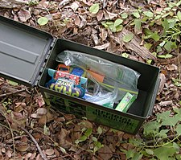

Geocaching is an outdoor recreational activity, in which participants use a Global Positioning System (GPS) receiver or mobile device and other navigational techniques to hide and seek containers, called "geocaches" or "caches", at specific locations marked by coordinates all over the world.
A typical cache is a small waterproof container containing a logbook and sometimes a pen or pencil. The geocacher signs the log with their established code name and dates it, in order to prove that they found the cache. After signing the log, the cache must be placed back exactly where the person found it. Larger containers such as plastic storage containers (Tupperware or similar) or ammunition boxes can also contain items for trading, such as toys or trinkets, usually of more sentimental worth than financial. Geocaching shares many aspects with benchmarking, trigpointing, orienteering, treasure-hunting, letterboxing, waymarking and Munzee. 